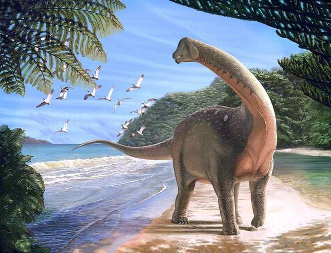
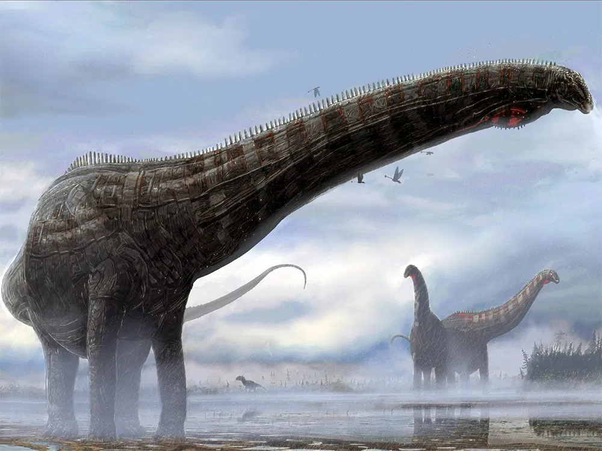
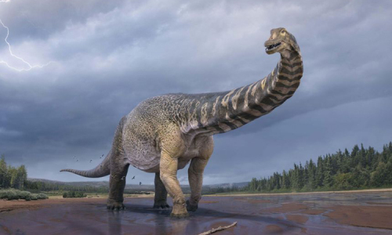
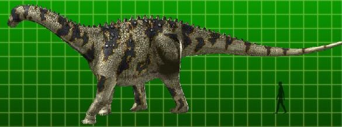
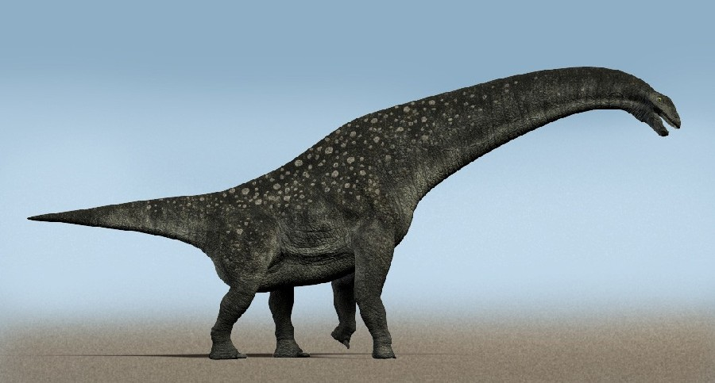
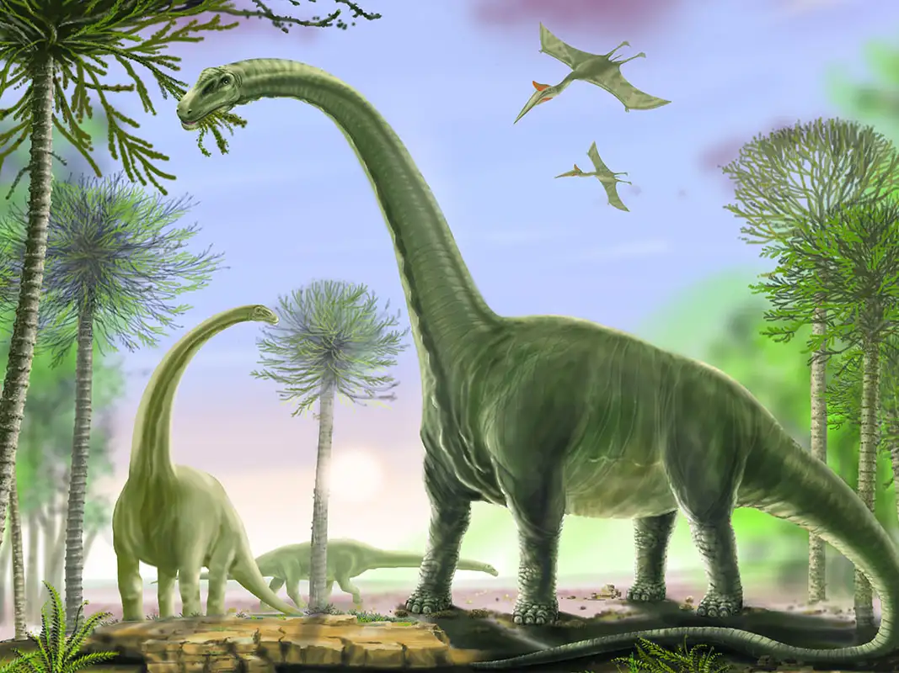
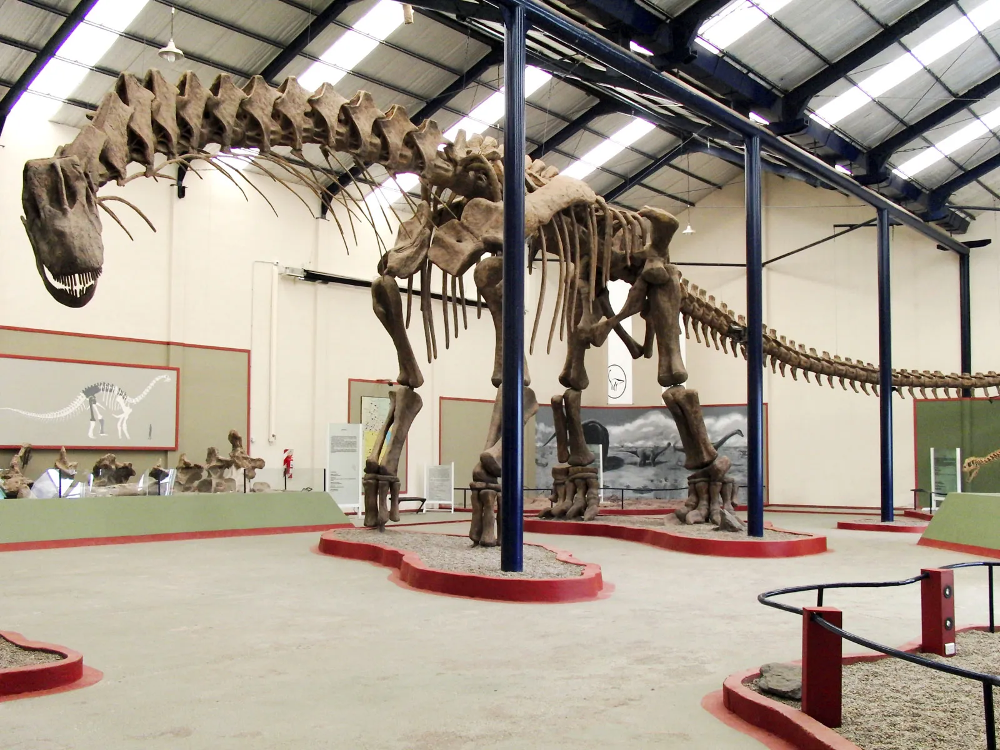

Titanosaurus
Thằn lằn khổng lồ kỷ Phấn trắng
Tổng quan
Kỷ
Cretaceous
Họ
Titanosauridae
Chi
Titanosaurus
Dài
15 m
Nặng
15 tấn
Thức ăn

Titanosaurus là thành viên tiêu biểu của họ khủng long được gọi là Titanosaur, là loài sauropod cuối cùng đi lang thang trên trái đất trước Sự tuyệt chủng K/T 65 triệu năm trước.
Nguồn: wikipedia.org
Phân bố
Khu vực Châu Á, Châu Âu và Châu Phi
Thông tin thêm về Titanosaurus
Kỷ nguyên
Titanosaurus là một chi khủng long thuộc nhóm Sauropoda, sống cách đây 80-65 triệu năm trước vào cuối kỷ Phấn trắng.
Phân bố
Loài khủng long khổng lồ này được biết là sống ở môi trường sống trên cạn, được tìm thấy lần đầu tiên ở Ấn Độ, chúng được cho là đã lang thang ở khắp các khu rừng ven sông của châu Á, châu Âu và châu Phi.
Tên khoa học
Được xác định và đặt tên bởi nhà cổ sinh vật học Richard Lydekker vào năm 1877. Titanosaurus trong tiếng Hy Lạp có nghĩa là "Thằn lằn khổng lồ".
Kích thước
Titanosaurus là một chi sauropod có kích thước dài từ 12 - 15 mét (40 - 50 feet) và có trọng lượng khoảng 15 tấn.
Ngoại hình
Nhìn chung, các loài sauropod được phân biệt bởi kích thước khổng lồ, cổ và đuôi dài, đầu nhỏ, chân cột và xương tứ chi nặng, rắn chắc.
Titanosaurus cũng được mô tả là một loài sauropod vạm vỡ, giống như Apatasaurus hoặc Diplodocus, nhưng có cổ dày hơn, rộng hơn và đuôi ngắn hơn. Tuy nhiên, những sự tái tạo này vẫn còn đáng ngờ, vì người ta không biết chắc liệu một chi sauropod cụ thể của Titanosaurus có tồn tại hay không.
Chế độ ăn
Titanosaurus là một động vật ăn thực vật. Loài khủng long nặng hơn 10 tấn này thường tụ tập theo bầy đàn và tiêu thụ một lượng lớn lá và cành cây. Mặc dù cổ dài nhưng có thể chúng đã có khả năng đứng trên hai chân sau để gặm ngọn cây cao.
Khám phá
Titanosaurus là dạng đầu tiên được phát hiện và sau này truyền cảm hứng cho tên gọi của nhóm lớn hơn, không phải là một chi được công nhận chính thức. Các hóa thạch Titanosaur đầu tiên, thuộc loài Titanosaurus indicus, được mô tả vào năm 1877. Loài này được biết đến từ một xương đùi và hai đốt sống đuôi được tìm thấy trong đá có niên đại từ kỷ Phấn trắng ở miền trung Ấn Độ.
Tuy nhiên, ngay sau khi phát hiện ra nó, tình trạng của Titanosaurus như một chi thực sự đã bị nghi ngờ. Các hóa thạch, có tính chất rời rạc, bề ngoài tương tự như phần còn lại của các loài sauropod khác ban đầu được phân loại là titanosaur và chi Titanosaurus đã trở thành một “đơn vị phân loại rác” — một nhóm đóng vai trò giữ chỗ cho các hóa thạch quá khó phân loại để được phân loại trong các nhóm khác.
Sự tuyệt chủng
Titanosaurus là loài sauropod cuối cùng đi lang thang trên trái đất trước Sự tuyệt chủng K/T 65 triệu năm trước. Sự tuyệt chủng của Titanosaurus và các loài khủng long khác đã mở đường cho sự phát triển của các loài động vật khác hiện nay. Tuy nhiên, Titanosaurus vẫn là một trong những loài khủng long lớn nhất từng sống trên Trái Đất và vẫn là một trong những chủ đề nghiên cứu quan trọng trong lĩnh vực khoa học động vật cổ đại.